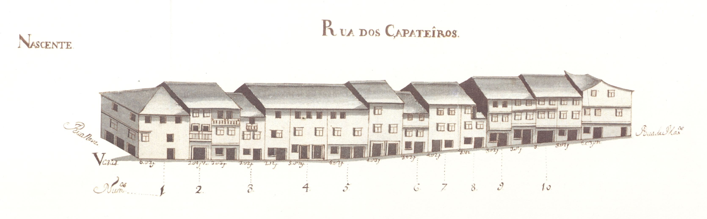

Rua dos Sapateiros e do Rossio da Praça - nascente.

Rua dos Sapateiros e do Rossio da Praça - poente.
Rua dos Sapateiros e do Rossio da Praça - nascente.
Rua dos Sapateiros e do Rossio da Praça - poente.
Pequena artéria, no enfiamento da rua Verde , que ligava a rua de Maximinos à rua Nova .
Aberta na Idade Média, aqui deveriam estar arruados os sapateiros há longa data, porque já no Tombo do Cabido, datável cerca de 1369-80 , lhe era dado o nome de Çapataria.
Com muitas casas de raiz antiga, apresentava em 1750 , do lado Poente, muitas analogias com a de Maximinos , no tipo de casas; mas sem a qualidade de desenho e o ordenamento que se vê naquela rua.
Tinha então a maioria dos edifícios com 3 pisos, 50% dos quais de dois sobrados; as janelas eram do tipo bracarense, havendo, contudo, no terceiro piso, muitas com portadas de madeira. Do lado Poente o primeiro piso teria lojas de comércio, detectáveis pela largura da porta, a toda a extensão da casa. Do lado Nascente a tipologia é outra, apesar de haver doisa casos, os prazos n.ª 2 e 10, de porta ampla; aqui aparece-nos outro tipo de abertura que irá ser extremamente frequente em ruas secundárias de extra-muros: trata-se da conjugação de uma porta normal ladeada por uma janela, separadas por uma fina coluna de pedra de secção rectangular.
Em complemento desta rua está o Rossio da Praça , que comunicava a Oeste com a Pracinha.
Implantado numa zona com um pequeno declive, apresentava habitações de três pisos, sobradadas, no lado Norte e de 2 pisos no Sul, sendo estas muito semelhantes às do lado Nascente da rua dos Sapateiros .
Das 15 casas do lado Nascente e 23 do Poente, eram prazos do Cabido 9 e 7 casas, respectivamente. No Rossio da Praça havia 4 casas do lado Sul e 5 do Norte, havendo só dois prazos do Cabido, no Sul.
Com o alargamento da rua em 1890 , toda a linha de fachadas de Nascente desapareceu. O alçado Poente, a partir do prazo n.º 15 e em direcção a Norte, bem como o Rossio da Praça (lado Sul) mantiveram-se.
Actual fragmento da rua D. Frei Caetano Brandão .

Rua dos Sapateiros e Rossio da Praça

Rua dos Sapateiros e Rossio da Praça
Enfiteuta: Enfiteuta não encontrado
Foro: Foro não encontrado
Descrição:
Enfiteuta: Luís de Abreu, sapateiro
Foro: 300 reis e 2 galinhas
Descrição:
Enfiteuta: António Vieira de Araújo
Foro: 340 reis e 2 galinhas
Descrição:
Enfiteuta: Quitéria Maria
Foro: 480 reis
Descrição:
Enfiteuta: Manuel Jácome
Foro: 400 reis e 2 galinhas
Descrição: Descrição não encontrada
Enfiteuta: Vicente de Barros
Foro: 260 reis e 2 galinhas
Descrição:
Enfiteuta: Diogo de Barros, sapateiro, casado com Gracia de Faria
Foro: 220 reis e 2 galinhas
Descrição: Descrição não encontrada
Enfiteuta: Ana Maria Ribeiro, viúva
Foro: 160 reis e 2 galinhas
Descrição:
Enfiteuta: Enfiteuta não encontrado
Foro: Foro não encontrado
Descrição:
Enfiteuta: Enfiteuta não encontrado
Foro: 54 reis (de censo)
Descrição:
Enfiteuta: Pedro Loureiro
Foro: 340 reis e 2 galinhas
Descrição:
Enfiteuta: António Pereira de Barros, Reitor da freguesia de Adaúfe
Foro: 380 reis e 2 galinhas
Descrição:
Enfiteuta: Josefa Maria, viúva
Foro: 1460 reis e 2 galinhas
Descrição:
Enfiteuta: Enfiteuta não encontrado
Foro: Foro não encontrado
Descrição:
Enfiteuta: António de Azevedo, sapateiro, casado com Teresa de Sousa
Foro: 640 reis e 2 galinhas
Descrição:
Enfiteuta: Manuel da Costa, sapateiro
Foro: 460 reis e 2 galinhas
Descrição: Descrição não encontrada
Enfiteuta: Enfiteuta não encontrado
Foro: 108 reis (de censo)
Descrição:
Enfiteuta: Benta de Araújo
Foro: 200 reis e 2 galinhas
Descrição:
Enfiteuta: Manuel da Silva, padeiro
Foro: 15 reis
Descrição: